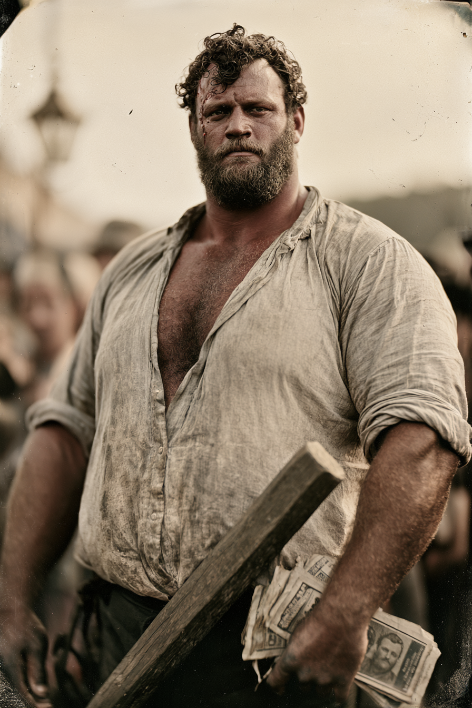

Archetyp: HARROWED (Gepeinigte)
Treten Sie näher: fünf Cent, um die Delle anzufassen, ein Dollar für den Versuch, ihn umzulegen — kassiert hat noch keiner.
| Agility | d6 | 1 |
| Smarts | d4 | 0 |
| Spirit | d6 | 1 |
| Strength | d6 | 1 |
| Vigor | d8 | 2 |
| Skill | Attr. | Die | Pts. |
|---|---|---|---|
| Fighting | Agi | d8 | 4 |
| Intimidation | Spi | d8 | 4 |
| Notice | Sma | d6 | 2 |
| Athletics | Agi | d6 | 1 |
| Persuasion | Spi | d6 | 1 |
| Weapon | Range | Damage | AP | RoF | Wt. | Cost |
|---|---|---|---|---|---|---|
| Die Wagenspeiche | – | Stä+W6 | – | – | 2 | – |
| mit Grimmigem Diener W10+W6+1 | ||||||
| Messer, Bowie | – | Stä+W4+1 | 1 | – | 1 | $4 |
| Winchester '73 (.44-40) | 24/48/96 | 2W8–1 | 2 | 1 | 5 | $25 |
| 15 Schuss | ||||||
Robustheit 9 (6 + 1 Größe + 2 Untot) · Beherrschung = Geistes-Würfeltyp beim Tod
Hintergrund. Zeke war Preisboxer ohne Handschuhe in den Minencamps von Leadville bis zu den Black Hills, einundvierzig Kämpfe, achtunddreißig Siege. In Cheyenne ’83 boten ihm vier Männer sechshundert Dollar, in der elften Runde zu Boden zu gehen. Er ging nicht, und sie erwischten ihn hinter dem Stall und schlugen ihn mit einer Hickory-Wagenspeiche tot — sie ließen sich eine gute halbe Stunde Zeit. Er wachte in einer Armenkiste auf, mit eingeschlagenem Schädel und etwas darin, das applaudierte. Er kam zurück, weil er elf Runden in einen Kampf hinein war, den er nicht beendet hatte — das ist tatsächlich schon alles, und er sagt es dir auch so. Zeke versteckt nicht, was er ist; er wirbt damit, denn ein Toter, den man nicht töten kann, ist die beste Zugnummer im Territorium, und die Alternative wäre, gejagt zu werden.
Der Manitu — „Mr. Bright“. Mr. Bright ist eine Wonne, und genau das ist das Problem. Zu Lebzeiten war er Theateragent und Medizinschau-Ausrufer und vergiftete drei seiner eigenen Künstler wegen der Versicherung; von seinem Enthusiasmus hat er nichts eingebüßt. Er droht nie. Er schmeichelt. Er nennt Zeke „Champ“ und „mein Junge“, er legt die Ansagerlitanei unter Zekes Atem — „und in der nahen Ecke, zweihundertvierzig Pfund geweihtes Rindfleisch—“ — und er spielt das Geräusch einer Menge ein, die nicht da ist: Applaus und stampfende Stiefel, anschwellend, wenn Zeke etwas Gewalttätiges tut, und zu einer furchtbaren Stille verebbend, wenn nicht. Er ist der Manitu, der auf deiner Seite ist. Er will, dass Zeke verehrt wird. Er bucht die Kämpfe, er liebt das Geld, er will den Amboss aufrichtig ungeschlagen — denn ein Gepeinigter, den eine Menge liebt, ist ein Gepeinigter, dem eine Menge folgt, und eine folgende Menge ist ein Mob, und ein Mob ist eine sehr effiziente Art, Furcht zu ernten. Er will nicht, dass Zeke sich davonstiehlt und einen Fremden in einer Gasse ermordet. Er will, dass er jemanden vor zweihundert zahlenden Gästen tötet, und er ist bereit, Jahre auf die richtige Nacht zu warten.
Build. Geschicklichkeit W6, Verstand W4, Geist W6, Stärke W6 → W10, Konstitution W8 · Parade 6, Robustheit 9, Größe +1, Beherrschung 6 Kämpfen W8, Einschüchtern W8, Bemerken W6, Athletik W6, Überreden W6 Talente: Harrowed (Gepeinigt), Supernatural Attribute (Übernatürliches Attribut — Stärke, gratis beim Zurückkehren: zwei Würfeltypen, W6→W10), Brawny, Menacing (Bedrohlich — laut Grundbuch S. 60 erfüllt Gepeinigtsein die Voraussetzung von selbst) Handicaps: Grim Servant o’ Death (Grimmiger Diener des Todes) — Major, nur Wild Cards: +1 auf jeden Schadenswurf, aber bei einem kritischen Fehlschlag trifft er den nächststehenden Verbündeten mit einer Steigerung, ob in der Schusslinie oder nicht. Das ist die mechanische Form von Mr. Brights Absicht: die Menge bekommt immer ihr Blut, und nicht immer das des Gegners. · Big Mouth — Minor · Greedy — Minor Ausrüstung: die Wagenspeiche — genau die Hickory-Speiche, mit der sie ihn erschlugen, die er zurückholte und nun an der Hüfte trägt, an einem Ende dunkel (St+W6; mit Grimmigem Diener also W10+W6+1); Schlagringe; eine Rolle Handzettel mit seinem eigenen Gesicht und der Zeile DER MANN, DEN SIE NICHT TÖTEN KONNTEN; ein täglich erneuertes Metzgerpapier-Paket rohes Rindfleisch, das er absichtlich in aller Öffentlichkeit isst. Das Aussehen: bei der Arbeit trägt er keinen Hut. Die linke Schädelseite ist über der Schläfe eingeschlagen, ein handgroßer Krater, in den der Haaransatz hineinläuft, und das linke Auge folgt dem rechten nicht. Sein Kiefer ist auf dieser Seite mit Messingdraht zugedrahtet, den er selbst verdrillt hat, also spricht er ein wenig schief und grinst wie ein Tor, das aus den Angeln geht. Fünf Cent, um mit dem Daumen in die Delle zu drücken — er hat damit echtes Geld verdient.
Aufhänger. Mr. Bright hat seine Beherrschungs-Ergebnisse angespart, und Zeke weiß nicht, dass ein Manitu das kann. Irgendwann im letzten Jahr — Zeke verlor den Großteil einer Nacht in Deadwood und zuckte mit den Schultern — hat der Manitu ihn für etwas verpflichtet. Es kursiert ein Veranstaltervertrag mit Zekes Zeichen darunter, für einen Schaukampf in einer Minenstadt namens Kettle Bend, und die ganze Stadt ist still von einem Diener der Reckoner aufgekauft worden, der sehr daran interessiert ist, was mit einem Furchtlevel geschieht, wenn vierhundert Menschen bei Lampenlicht zusehen, wie ein Toter einen Lebenden zerreißt. Zeke hat den Vertrag nie gelesen. Mr. Bright ist begeistert, dass er endlich auf dem Programm steht.
Warum es Spaß macht. Du bist der Türeneintreter mit Robustheit 9, den nichts außer einer Kugel ins Hirn aufhält, und der ganze Tisch sieht zu, wie du deinen W6 auf der Beherrschungstabelle setzt, um +W6 auf alles zu bekommen, wenn es eng wird. Und der Horror in deinem Kopf quält dich nicht — er ist dein größter Fan, er ist stolz auf dich, er managt deine Karriere, und jeder gute Abend macht ihn stärker.
Regelgrundlage: Regelnotizen · Archetyp-Notizen